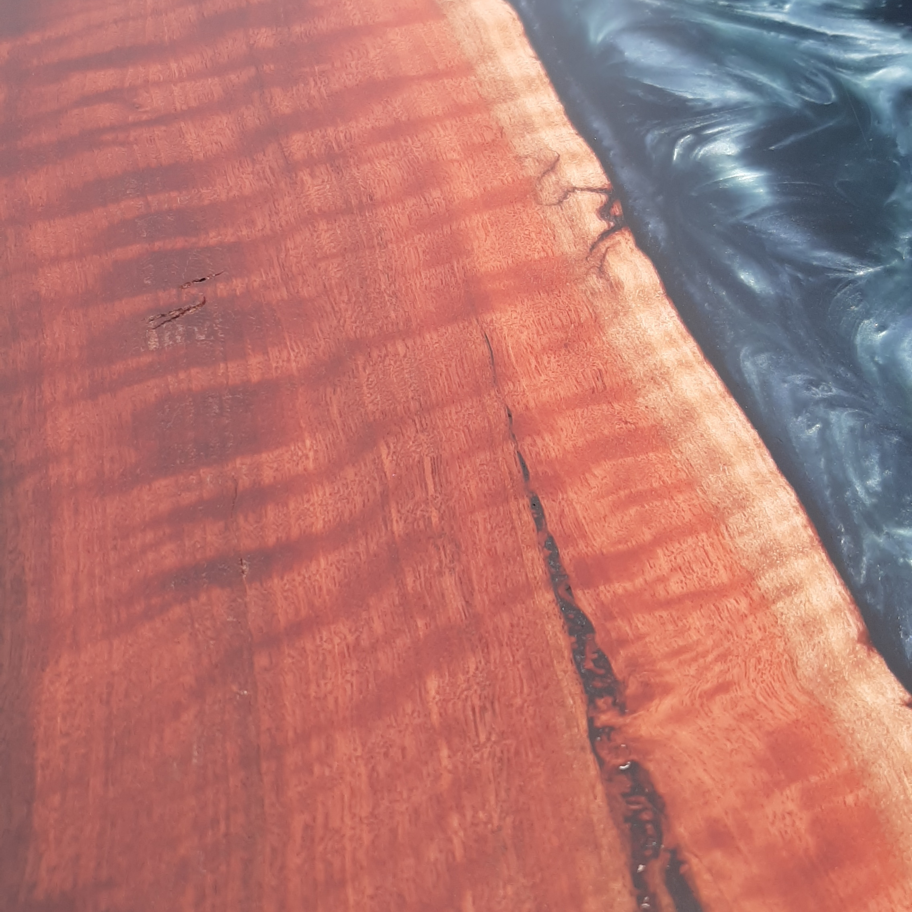
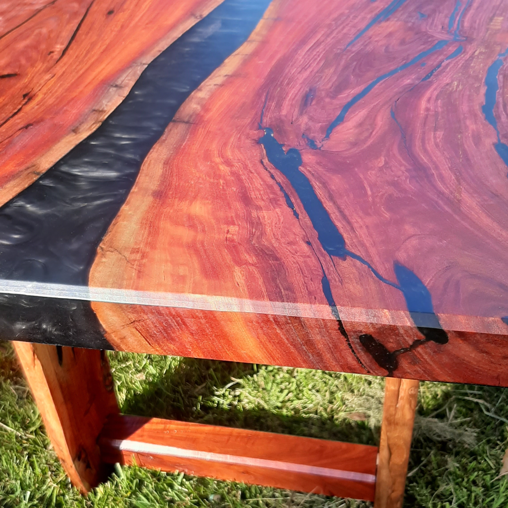
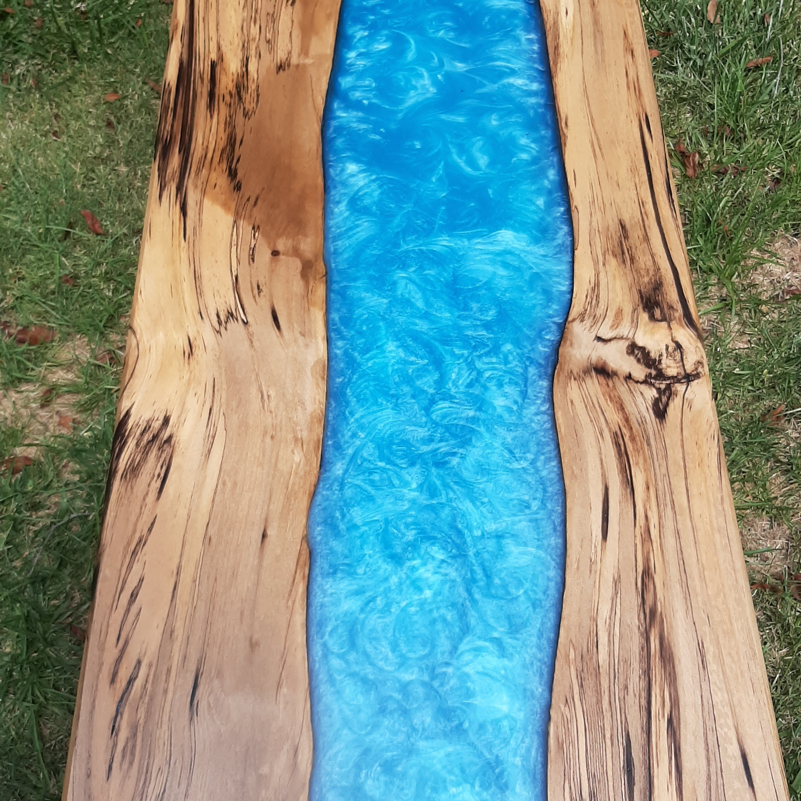
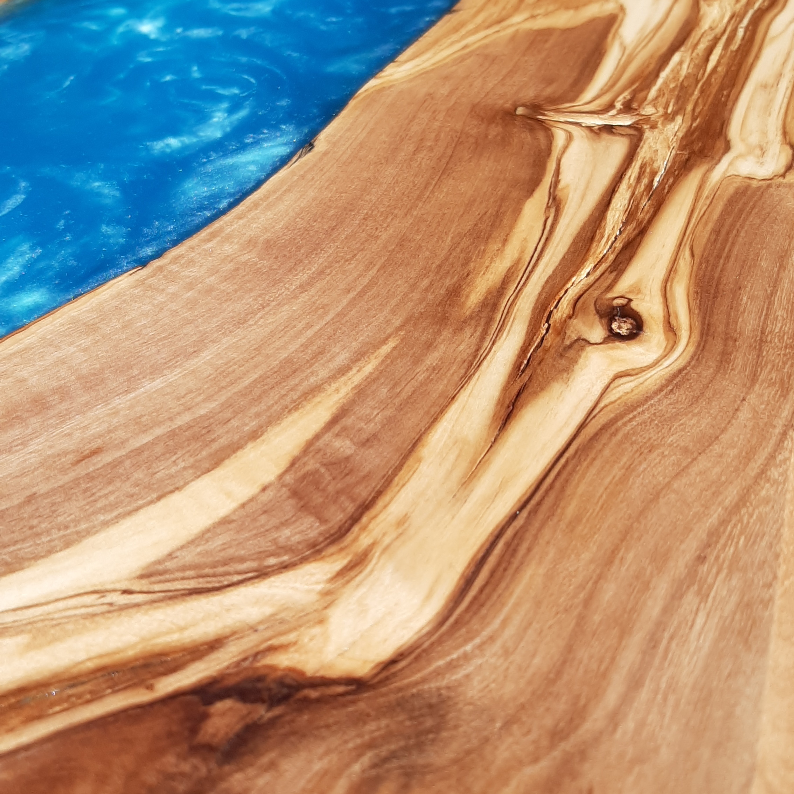

Messmate is a common hardwood with timber varying in colour from pale brown to light yellow and is commonly sourced from Victoria and Tasmania. It often has beautiful gum vein features which offer fantastic contrast with a resin river. A messmate resin river table makes a stunning centerpiece for any space!
Blackwood
Sourced from Victoria and Tasmania, Blackwood is known for its rich golden brown colour. The sapwood is much lighter in colour, yielding a beautiful natural contrast. It often has interesting curl features that reflect based on the viewing angle. Blackwood often has small borer holes on the live edge which look fantastic when filled with epoxy resin.
Jarrah

Found in the south west of Western Australia, Jarrah is a particularly strong and dense timber. It is a rich, dark red colour and often is found with a beautiful streaky curl figure as shown in the image. Its beauty and strength lend itself ideally to furniture - a Jarrah resin table will last a lifetime!
Red Gum

Sourced from all over the country, River Red Gum is the quintessentially Australian timber. It is classically deep red in colour and often features curl and fiddleback figure. Red Gum also often features small borer holes which look fantastic when filled with epoxy resin. A Red Gum resin river table is about as Australian as it gets!
Sassafras

Typically sourced from Tasmania, Sassafras is sought after for its strength and natural attractiveness. Timber colour ranges from cream to pale yellow. The harder to find Blackheart Sassafras variation contains striking black spalting features that can really make a table stand out.
Olive

The timber from olive trees is often streaky, figured and beautiful. Olive lends itself well to serving boards and other smaller pieces due to the size of olive branches that can typically be sourced.
We work with many other timbers as well - just let us know what you're interested in!